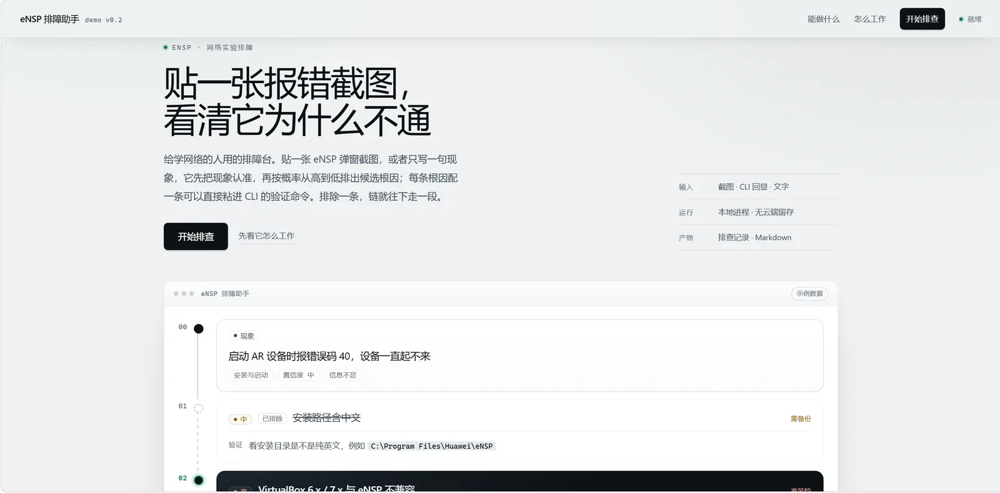
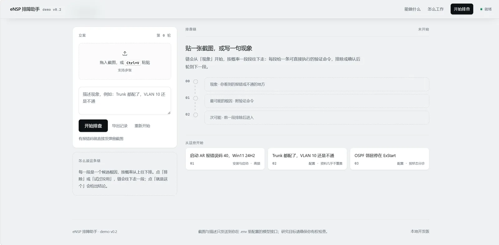
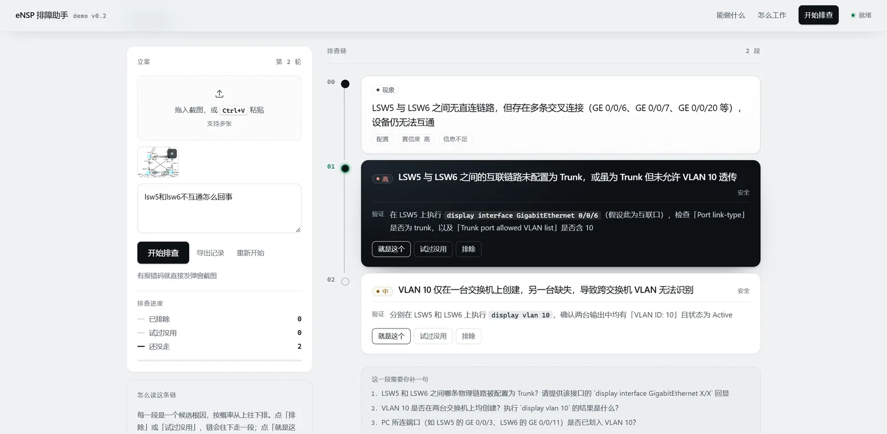
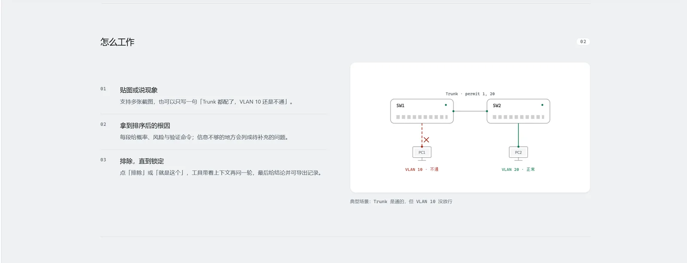

PROJECT 01 / AI AGENT
eNSP 排障助手
面向网络实验课学生的多模态排障助手：贴上报错截图，得到按概率排序、按风险分级的排查路径；信息不足时先追问，而不是硬给一个答案。
它解决什么
学生在 eNSP 里配不通时，缺的不是资料，而是“先试哪个、哪个有风险”。当时的 eNSP 资料里，约 90% 的篇幅在讲安装和汉化，真正卡住人的配置故障几乎空白。
所以我把它从“资料汇总”改成“按现象定位原因”：用户描述现象（或贴报错图），它给出几条可能的根因，按概率排序，并给每条根因配一个能立刻做的验证动作。
怎么做的
- 先收范围。拆完两份现有资料后确认 90% 是安装类问题，于是不做“知识库问答”，只做“按现象定位原因”。
- 把风险写进答案。竞品把「改 BIOS」和「删注册表」平级罗列，用户不知道哪个能碰；这里每条根因并排给出风险等级（安全 / 需备份 / 高风险）与可执行验证方法。
- 不指望提示词消幻觉。实测模型会把 VirtualBox 版本说反（eNSP 只认 5.2.x），于是改为注入领域事实 + 回归断言。
- 把闲聊变成收敛。把「已排除 / 已试无效」重写成结构化清单回灌模型，连排除 4 条后它仍能在第 4 轮换出新方向。
- 自己建评测集。30 条 × 5 类（含“信息不足”“误导陷阱”）× 3 次重复 = 90 次作答；判分故意换厂商、先用 2/1/0 已知答案校准，用语义判断替代关键词匹配。
证据
90次评测作答（30 条 × 3 次重复）
0→78%补 6 张知识卡后，定位类满分率
31→50%整体满分率的变化
定位「现象描述」类的 18 次作答里，0 次满分——先确认这是知识缺失而不是模型能力问题，再补 6 张知识卡片，该类从 0% 到 78%，整体从 31% 到 50%，口语化变体重测 78% 没有下降。
我也没有因为它“更高级”就留下 Agent 化方案：实测 50%→46%，主动移除，不因为已经投入就留着。
评测集怎么建的
30 条评测集按 5 类拆开，每类 6 条，每条跑 3 次——同一套问题重复测，才能区分“偶然答对”和“稳定答对”。
| 类别 | 条数 | 考察什么 | 判分口径 | 首轮 | 补知识卡后 |
|---|---|---|---|---|---|
| 现象描述（定位类） | 6 | 从一句现象能否定位到根因 | 根因命中 + 验证命令可执行 + 风险标注正确 | 0% | 78% |
| 安装与启动 | 6 | 版本、路径、依赖类问题 | 同上 | — | — |
| 配置与协议 | 6 | Trunk、VLAN、OSPF 等配置故障 | 同上 | — | — |
| 信息不足 | 6 | 该追问时是否追问，而不是硬答 | 追问项覆盖率 | — | — |
| 误导陷阱 | 6 | 是否被错误前提带偏 | 识破并纠正计满分 | — | — |
| 合计 | 30 | × 3 次重复 = 90 次作答 | 整体满分率 | 31% | 50% |
每类只有 6 条，样本小，结论只作方向判断，不作为效果承诺。
界面截图




截图来自本地 demo v0.2 的示例数据，不含真实设备与账号信息。
它不做什么
不是自动维修系统，不会替用户改配置；不承诺“唯一正确答案”，只给按概率排序、带风险等级的路径；不替代实验课和老师。公开版只用脱敏案例。